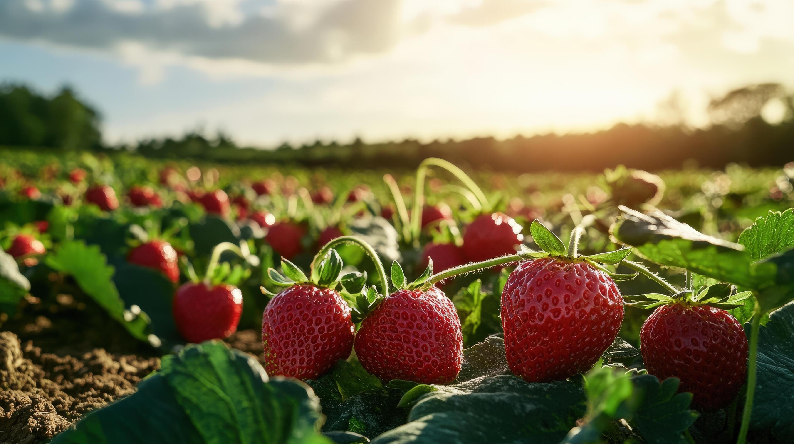

We are a local, family-owned U-Pick farm in Mahabaleshwar. We offer various crops for picking throughout the year, such as strawberries, carrot, radish, and vegetables.
To Serve Fresh Strawberries to our customers.
Specializing in natural, organic and local produce and products as well as no spray, pesticide-free greens, and vegetables from our farm throughout the year.
The first strawberries were planted on our farm in 1975. The first planting was a small strawberry plot and after some dedicated research, we decided we could be successful at producing and marketing fruits and vegetables.

We are leading trader and supplier of good quality of Strawberry,
We supplier almond at market competitive prices.
We are a local, family-owned U-Pick farm in Mahabaleshwar. We offer various crops for picking throughout the year, such as strawberries, carrot, radish, and vegetables.